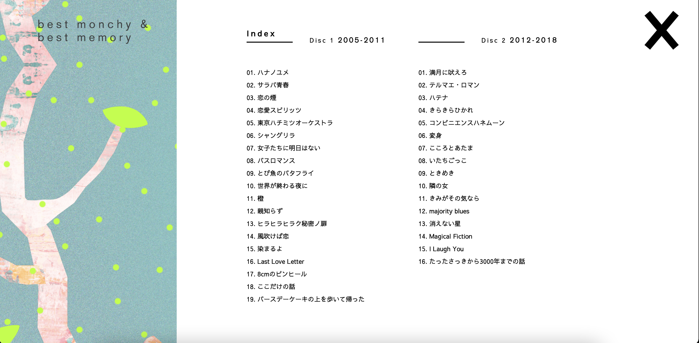
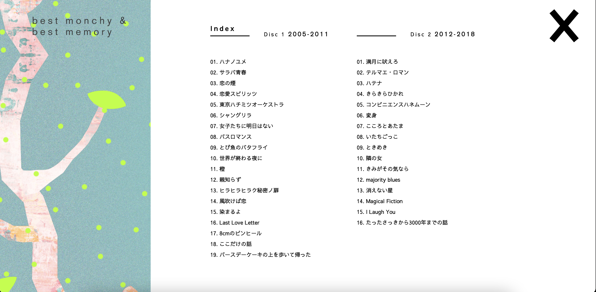

best monchy & best memory
 

This project is a scrolling site with collective celebatory comment comments from fans for Chatmonchy's, a Japanese band, music. Scrolling down, the background moves with the foreground, presenting each comment on a graphic slice of lemon. I think the element of the bright colored trees and fruits were a good symbol for growth and happiness that Chatmonchy's music has brought. Because the dataset was big, the website indexed all the groups of comments using titles of their music and when clicked, it brings you to the tree of comments associated to that title. I think this works really well to organize such a big amount of information without visitors getting lost since the page seems continuous.